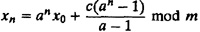

The following formula can be used for mixed LCGs provided computation is done exactly:

This formula also applies to multiplicative LCGs with c = 0.
Table 26.2 lists seeds that will produce sequences 100,000 apart for the generator:
xn = 75 xn-1 mod(231 - 1)
The values of x0, x100,000, x200,000 and so on are listed in the table. The values have to be read along rows. For example, x100,000 is 46,831,694.
- 5. Reuse seeds in successive replications. If a simulation experiment is replicated several times, the random-number stream need not be reinitialized, and the seeds left over from the previous replication can continue to be used.
- 6. Do not use random seeds. Analysts often use random-seed values such as the time of day. This causes two problems: first, the simulation cannot be reproduced and, second, it is not possible to guarantee that the multiple streams will not overlap. Random-seed selection is therefore not recommended. In particular, do not use successive random numbers obtained from the generator as seeds.
26.8 MYTHS ABOUT RANDOM-NUMBER GENERATION
The following are myths that uninformed analysts may believe to be true.
- 1. A complex set of operations leads to random results. Early random-number generators were based on the belief that any set of operations whose results could not be easily predicted would lead to random results. Using a sequence of operations where the final result is difficult to guess does not necessarily mean that the resulting sequence will pass the tests for uniformity and independence. In general, it is better to use simple operations that can be analytically evaluated for randomness.
- 2. A single test such as the chi-square test is sufficient to test the goodness of a random-number generator. The sequence 0, 1, 2,..., m - 1 is obviously not random. However, it will pass the chi-square test with a perfect score but will fail the run test. Similarly, it is possible to write a sequence that will pass the run test but will fail the chi-square test. It is therefore necessary to use as many tests as possible. Some tests for randomness are discussed in Chapter 27. In general, it is better to avoid inventing new generators unless you are highly sophisticated statistically.
- 3. Random numbers are unpredictable. A truly random sequence should be completely unpredictable. For example, given the past history of the throws of a fair die, it is impossible to predict the result of the next throw. This is not the case with pseudo-random number generators. In fact, given a few successive numbers from an LCG, one can easily compute the parameters, a, c, and m and from then on predict the sequence forward or backward without any error. LCGs are therefore unsuitable for cryptographic applications where unpredictability is a desired goal. For a discussion on unpredictable pseudo-random number generators, see Vazirani and Vazirani (1984); Frieze, Kannan, and Lagarias (1984); Blum, Blum, and Shub (1986); and references cited there.
- 4. Some seeds are better than others. This may be true for some generators, for example,
xn = (9806xn-1 + 1)mod(217 - 1)
The generator works correctly for all seeds except x0 = 37,911. If by chance 37,911 is used as a seed, the generator will be stuck at xn = 37,911 forever. Such generators should be avoided. To generate a single stream, any nonzero seed in the valid range should produce an equally good sequence. Some generators have an additional requirement that the seed should be odd. In general, generators whose period or randomness depends upon the seed should not be used, since an unsuspecting user may not remember to follow all the guidelines.
- 5. Accurate implementation is not important. The period and randomness properties of generators are guaranteed only if the generation formula is accurately implemented without any overflow or truncation. Overflows and truncations can suddenly change the path of a random-number generator and reduce the period. Neglecting overflows is a common mistake. For example, consider the generator
xn = 1,103,515,245xn-1 + 12,345 mod 231
This generator has been implemented in a popular operating system with the following FORTRAN statement:
xn = (1103515245xn-1 + 12345).AND.X’7FFFFFFF’
The AND operation is used to clear the sign bit. It is clear that straightforward multiplication above will produce overflow.
- 6. Bits of successive words generated by a random-number generator are equally randomly distributed. If an algorithm produces l-bit-wide random numbers, the randomness is guaranteed only when all l bits are used to form successive random numbers. Generally, any particular bit position or sequence of bit positions will not be equally random. The following example illustrates a case that is typical of all LCGs with modulus m = 2k.